Kasama, Ibaraki: things to do, food and stays
Kasama · Ibaraki
Kasama
Highlighted on the Ibaraki map.
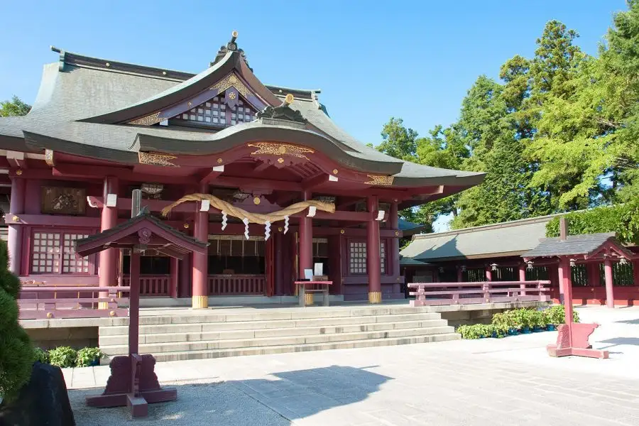
Stay
シェアハウス笠間
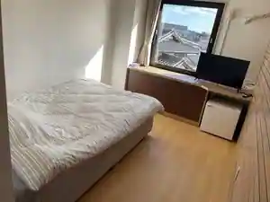
Shiea House Kasama
Inn in Yakumo, Kasama; 5-minute walk from Tomobe Station.
HOTEL R9 The Yard 笠間
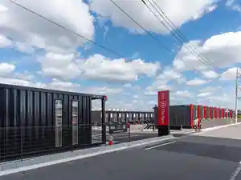
HOTEL R9 The Yard Kasama
シティーホテル友部
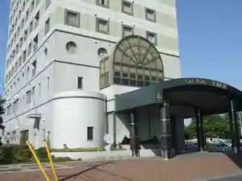
City Hotel Tomobe
Hotel in Asahi, Kasama; 10-minute drive from Tomobe Station.
ＦＡＭＩＬＹ ＶＩＬＬＡ ＫＡＳＡＭＡ
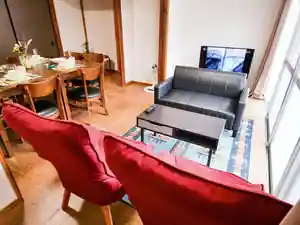
FAMILY VILLA KASAMA
ＶＩＬＬＡ２２８ＫＡＳＡＭＡ
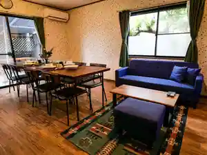
VILLA228KASAMA
フォレストインかさま
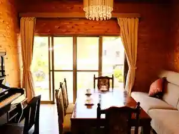
Foresutoin Kasama
Inn in Kasama with pet-friendly rooms.
＜常陸牛の宿＞ホテル イオ アルフェラッツ
Hitachi Ushi No Yado Hotel Io Aruferattsu
割烹旅館 城山
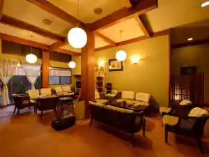
Kappo Ryokan Shiroyama
ETOWA KASAMA（エトワ笠間）
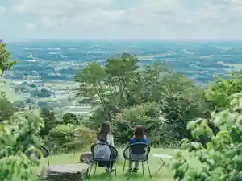
ETOWA KASAMA(Etowa Kasama)
Inn in Kamisato, Kasama with scenic views.
Dining
鮨松榮
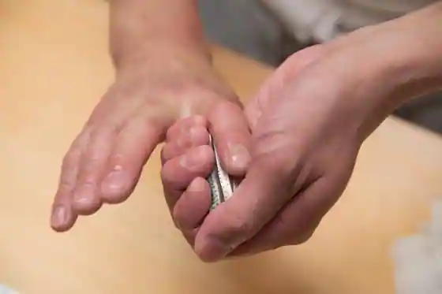
Sushi Shoei
うなぎ 量深
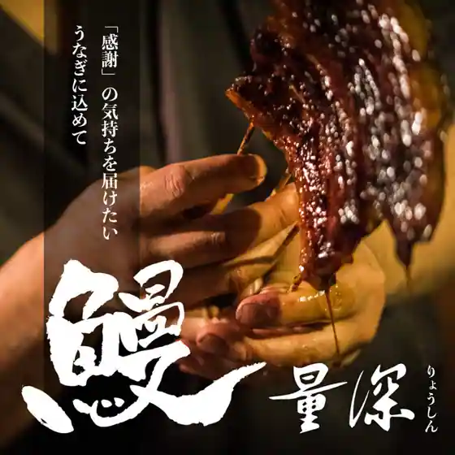
Unagi Ryojin
そば家 和味
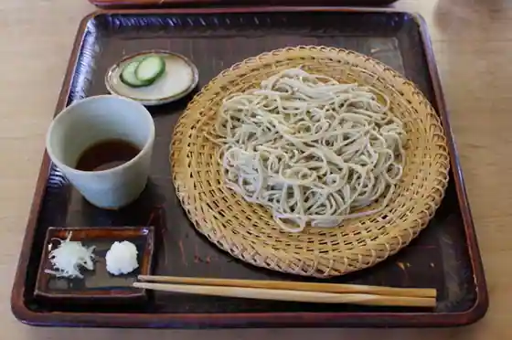
Soba Ie Wa Aji
宍戸庵
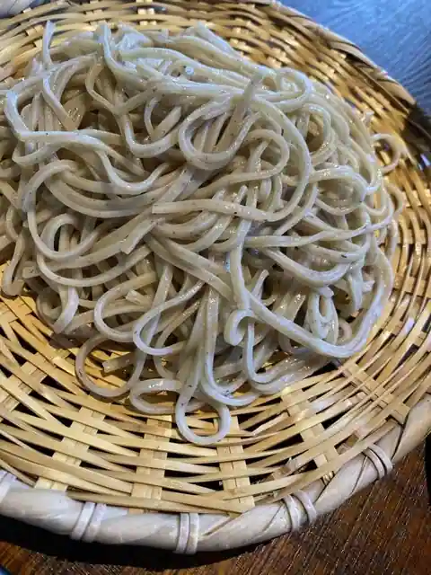
Shishido Iori
いばらき食彩香寿亭
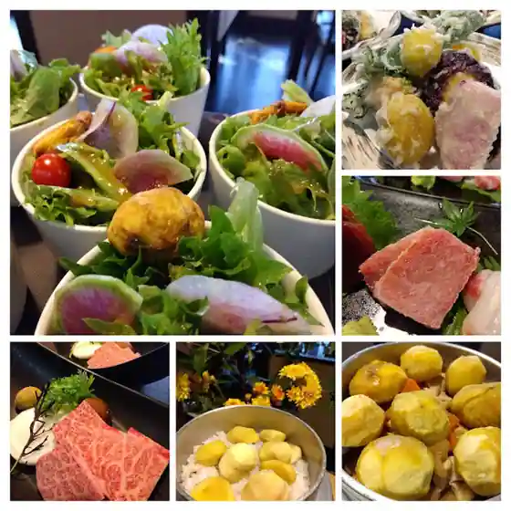
Ibaraki Shokusai Koju Tei
彩美亭
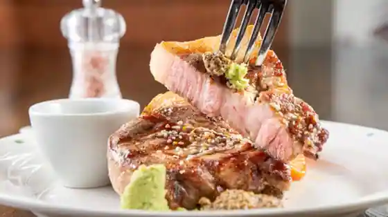
Ayami Tei
洋風笠間菓子グリュイエール
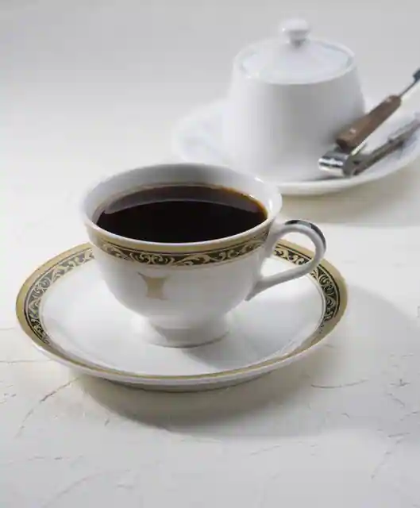
Yofu Kasama Kashi Guryuieru
いそ
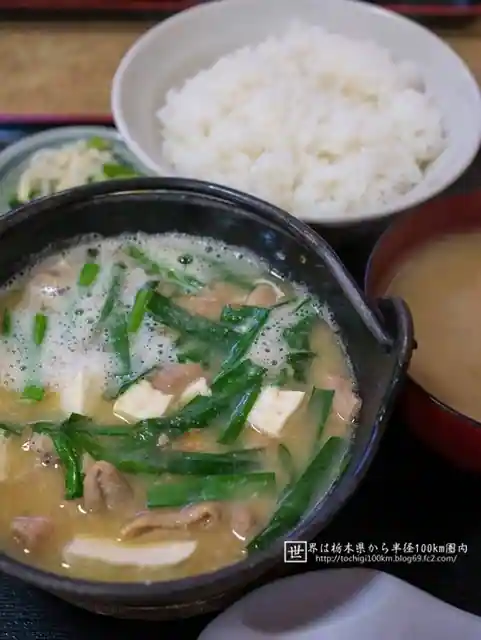
Iso
手打百藝 泰然
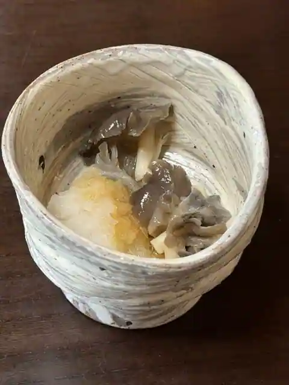
Teuchi Hyaku Gei Taizen
栗のいえ
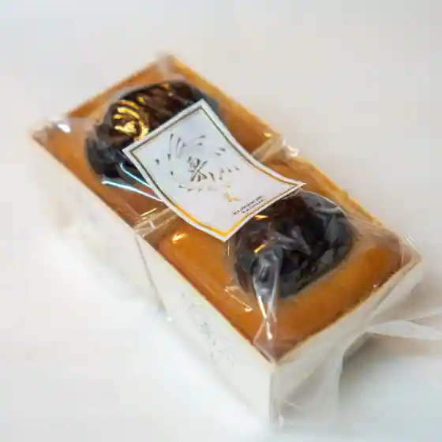
Kuri Noie
楽栗 LaKuri
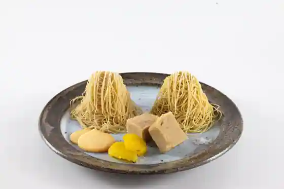
Raku Kuri LaKuri
森の石窯パン屋さん
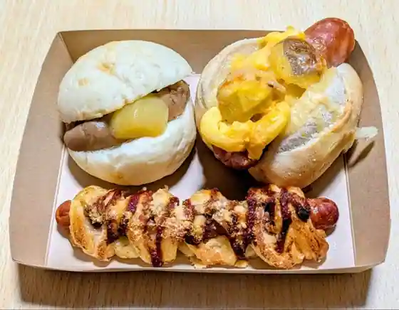
Mori No Ishigama Bakery Ya San
U-A Cafe モンブラン
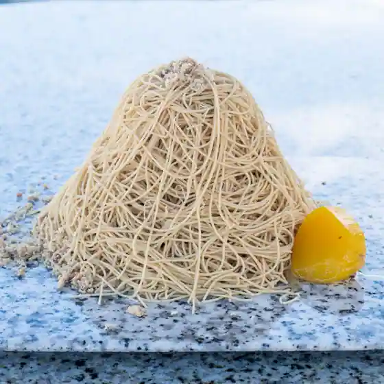
U-A Cafe Monburan
二ツ木
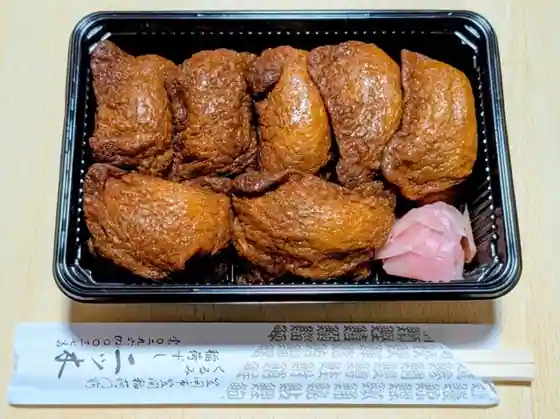
Ni Tsu Ki
雪みるく
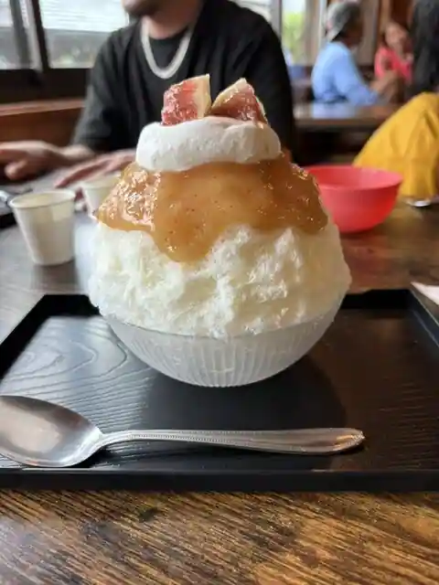
Yuki Miruku
炙り焼 丼・どん
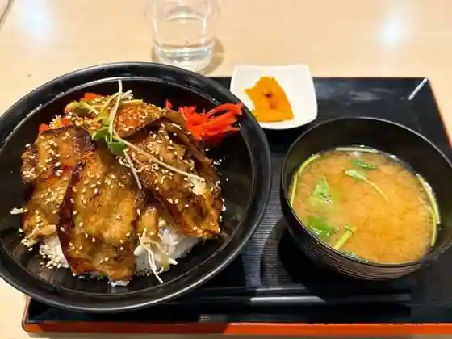
Aburi Yaki Donburi Don
手打ちそば処 柊
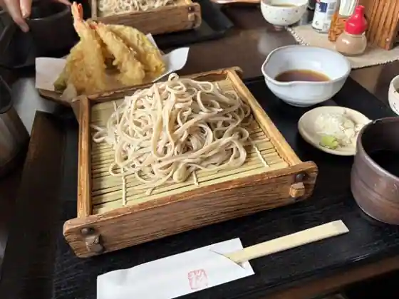
Teuchi Chisoba Tokoro Hiragi
kasama farm's
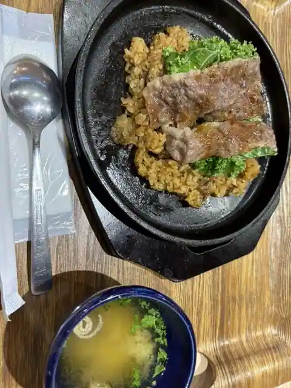
kasama farm's
尚庵
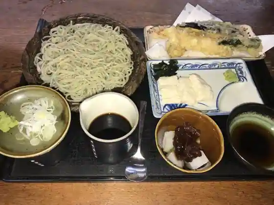
Takashi Iori
宍戸ヒルズカントリークラブレストラン
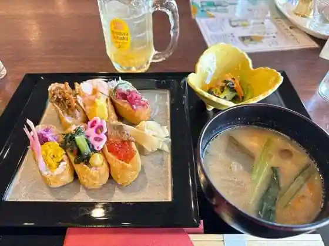
Shishido Hiruzukantorikurabu Restaurant
珠玉の蔵
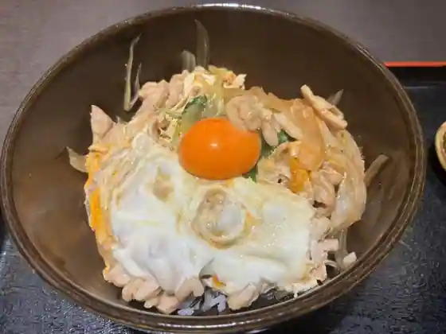
Shugyoku No Kura
陶之助＋
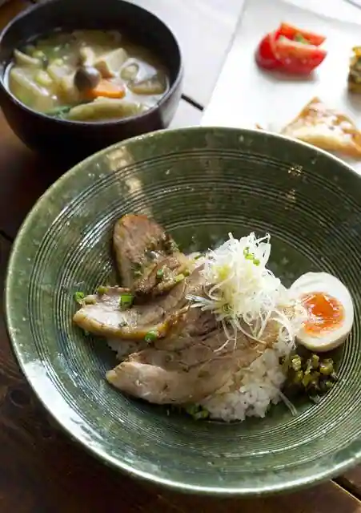
To Yukisuke +
十割そば 紅葉亭
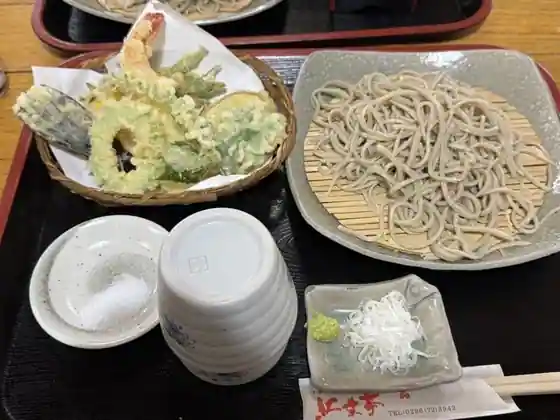
Ju Wari Soba Koyo Tei
いわまの栗や 小田喜商店
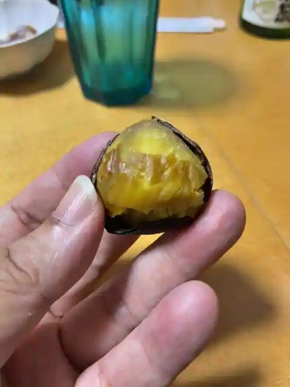
Iwamano Kuri Ya Oda Ki Sho
Sights
Kuri no Ie
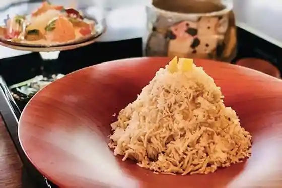
Roadside Station Kasama
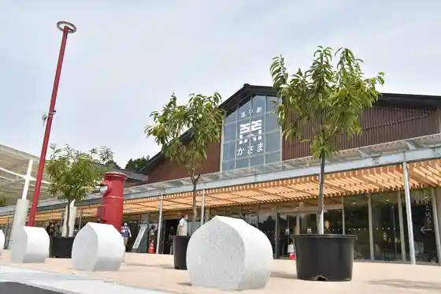
Hitachi Kuni Izumotaisha
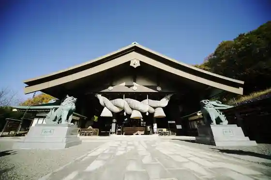
Kasama Inari Shrine
Kasama Geijutsu no Mori Park
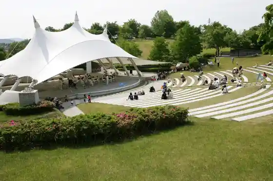
Kyu Tsukuba Kaigun Kokutai Shireibu Chosha
Kasama Kogei no Oka
Harukaze Banri So
Atago Yama
Kasama Tsutsuji Park
Kasama Ku Line Garuten
Kasama Rekishi Koryu Kan Izutsuya
Sudo Honke
Sa Hakusan
Mori no Ishigama Pan Ya San
Ibarakiken Togei Art Museum
Machi no Eki Kasama Yado (Kyu Kasama Mingei Village)
Yuzaki Kuri Sono
Otori Dai In
Kirara Kan
Iwama no Kuri Ya Oda Ki Shoten
Sasame Sobe Shoten
Kitayama Park
Kasama Yaki Kamamoto Seito Fukuda
Murasaki Park Kasama
Ishi Hiki Soba Ie Takashi Iori
ETOWA KASAMA
Resutoran Mon Rapan
Ito Kashi Mise
Nihonshu Bunka Nagaya Iso Kura
Soba Tokoro I Gawa
Tofu Chaya Sa Hakusan no Tofu Ya
Ware Kuni Yama (Wagakunisan)
Ni Tsu Ki
Kasama Inari Art Museum
O Shokuji Tokoro Purieru
Tanuki Iori Tsutaya
Ineda Zembo Sainen Tera (Ineda Gobo)
Tsu no Kuni Ya
So Ishi
Inaka no Jikka
Ishi no Hyakunen Kan
Mone no Ie
Auberge de Y
Autumn Leaves Tei
Eko Farm Hoshiyama
Kasama Nichido Art Museum
Kasama Yaki Kamamoto Yamasaki to En
Kimuraya
Inari Workshop ISAGO
Sa Hakusan Joshi Park
zakka&café LE MIDI (Ra Midi)
Ryo Gan Tera
Glass Gallery SUMITO
Iso Kura Shuzo
Komatsu Kan
Yu Yu Reigaku Take Mizu Tei (Yuyureiraku Chikusuitei)
Ko Minka Kurosawa Ei Yuki Kyoku
Yamazato no Atoriehausu Yume Taku Kaori
Kappo Ten Ho (Tenyoshi)
Mori no Naka no Ritoriito
Monzen House
Rairakku